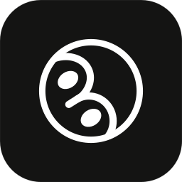

Brand kit · draft 0.1 · for review
Demido Studio
Make small models behave.
The rules and parts every Demido screen is built from: the logo, colour, type, spacing, motion, state glyphs, components and voice. Everything on this page is rendered from the token and style files in brand/, so what you see here is what the app will use.
00 · In context
What it adds up to
One window, built only from the parts on this page. Quiet and neutral until something needs you. The single accent colour marks the model that is awake.
Sweater price watch
shopping monitor01 · Brand
Five rules everything follows
Demido is calm, exact and open about what it is doing. When a design question comes up, these decide it.
-
1
Quiet until it matters
The interface is neutral by default. Colour is a signal, never decoration.
- One accent colour, with one meaning: a model is awake here.
- Caution and failure colours appear only while that state is true.
- Finishing something is normal, so "done" stays neutral.
- Morning email report
- Sweater price check
- Tool updates
-
2
Nothing hidden
Detail is one step away, never removed.
- Every summary opens to the full thing: the raw output, the exact prompt, the real request.
- Shortened content says how much it left out.
- Every setting is reachable, and a changed one is marked.
Ran
git statusbranch main, 2 ahead changed src/parser.rs src/lexer.rs new tests/quotes.rs (57 untracked build files left out)What the model was told
Run shell with shell.run. Read output → then act. Output long → ask for full. Never guess. -
3
Read in one pass
Written like an aircraft manual, for attention that is short and valuable.
- The answer comes first. Then numbered steps, one action each.
- Exact values with units. No filler, no praise, no apology.
- Three signal words, used exactly: NOTE, CAUTION, WARNING.
Not this
Great question! It looks like the model might be a little too large for your graphics card, so you may run into some slowdowns. You might want to consider a smaller quantization.
This
This model does not fit your GPU. It needs 9.8 GB. You have 7.6 GB free.
- Pick
Q4_K_M(6.1 GB). - Or keep
Q6_Kat about 9 tokens/s.
-
4
State is always visible
You never have to ask what is loaded, running or waiting.
- Circles are work. Eyes are models. The two never mix.
- Loading, lending and unloading are shown as they happen.
- Unfinished parts of the app say "Not built yet".
Qwen3 4B, generating 3 of 5 tasks 1 agent Voice, asleepA status line built from the two glyph families.
-
5
Motion explains
Movement shows cause and effect. It never decorates and never makes you wait.
- Controls answer on press, not on release.
- Anything you can grab can be grabbed again mid-move.
- Things you do all day, and anything from the keyboard, do not animate.
Press Load. A line travels round the eye while it loads, then the eye opens: the same move as the logo.
02 · Brand
Logo
Your mark, rebuilt as clean vector masters from Logo.ai. The geometry is untouched: the masters match your export to within edge anti-aliasing. One colour, always: white on dark, black on light.
Anatomy Our reading · yours to confirm
We describe the parts so the rest of the kit can refer to them. What the mark means is yours to say.
| Part | Measured on a 256 grid |
|---|---|
| Ring | 252 outer diameter, stroke 15.44 |
| Stems | stroke 17.37: 12.5% heavier than the ring |
| Eyes | 53.4 × 39.6 ovals, leaning 32.3° |
| Round cap | one, on the short bar. Every other end meets the ring. |
| Colour | one flat colour. No gradient, no outline. |
The kit borrows three things from the mark: the ring (task circles), the leaning eye (model state) and the round cap (icon strokes).
Two cuts Proposal
Your master is drawn for large sizes. Below about 40 px its strokes fall under 2 px and the eyes blur. The small cut keeps the same drawing with heavier strokes (ring 24, stems 26) and eyes 12% larger. Both rows below are real pixels.

Rule: small cut from 16 to 39 px (favicon, tray, title bar, sidebar). Master from 40 px up. Never smaller than 16 px.
Clear space and lockups
Keep one eye-length of empty space on every side: 0.21 of the diameter. The wordmark sits to the right, set in the brand sans.
Typeface pending Mark height = 1.7 × cap height. Gap = 0.45 × mark height. "Studio" in a lighter weight. Final lockup files get outlined letters once you approve the typeface.
App icon and tray
The app icon is the white mark on a near-black tile, nothing else. Sizes of 48 px and below use the small cut and a larger mark.

Proposal The tray icon tells you the state without opening the app: eyes open when a model is in memory, closed when none is. It changes your mark in one place only, so it is yours to accept or drop.
Do not
Files
File in brand/logo | Use |
|---|---|
demido-symbol.svg | Master. Takes the text colour (currentColor). In the UI at 40 px and up. |
demido-symbol-white.svg · -black.svg | Fixed-colour masters for anything outside the app. |
demido-symbol-small*.svg | Small cut, 16 to 39 px. |
favicon.svg · favicon.ico | Browser tab. The SVG switches black / white with the system theme. |
app-icon.svg · app-icon-small.svg · png/ | App icon and its PNG sizes, 16 to 1024 px. |
tray/tray-awake.svg · tray-asleep.svg | Tray states (proposal). |
Notes for your review
Logo.ai. Your source file also has one stray 1 pt stroke on the upper eye; the masters leave it out.03 · Foundations
Colour
True neutral greys, like your screenshot, with no tint. One accent: Demido green, unless you or your system choose another. Four signals that appear only when true. When nothing needs you, the only colour on screen is the model that is awake.
Demido green
Demido's colour is green. In the interface it means one thing: alive. The model that is awake wears it, keyboard focus wears it, and good news wears it. It is soft enough to sit beside your mark, clearly green rather than teal, and it stays apart from caution, danger and info, including for red-green colour blindness.
#68efaf#038a5aOne colour, oklch(0.86 0.15 160). Each theme holds its lightness where it reads; the hue and strength stay.
The accent is a setting
Green is the default, not a rule. If your system has an accent colour, Demido follows it, wherever that colour comes from. You can also pick any colour. Change it here and the whole page follows.
Appearance
Details
A web page cannot read your system accent. Pretend the system reports:
"Your KDE accent today" is what your desktop reported when this page was built: #e6a5d9. The navy shows the lightness guard: too dark to see on a dark background, so Demido lifts it and keeps its hue. Reading the system live: not built yet
Neutrals
Dark is the default. Light gets the same care. Click a name to copy its token.
Dark
- Primary text
- Secondary: supporting text, done items
- Tertiary: metadata, pending items
- Disabled
- Accent as text
Light
- Primary text
- Secondary: supporting text, done items
- Tertiary: metadata, pending items
- Disabled
- Accent as text
The numbers are contrast ratios against the canvas, measured live in your browser. Body text needs 4.5:1. Disabled text is exempt by design.
Signals
Each one is a glyph, a word and a colour together. The colours were chosen to stay apart from each other and from the accent, including for red-green colour blindness. Signal colours are for a glyph and a short label, never for running text.
04 · Foundations
Typography
Two typefaces, both bundled with the app so text looks the same on Linux, Windows, macOS and the web. Geologica for everything people read. JetBrains Mono for everything people copy.
Geologica
Make small models behave.
Aa Bb Dd Ee Gg Mm Oo Qq Rr Ss 0123456789
Chosen from 19 candidates because its letters are the closest to your mark: an almost circular o, round dots, soft joins. It also covers Latin, Cyrillic, Greek and Vietnamese, and has true italics. SIL Open Font License.
JetBrains Mono
Q4_K_M · 32,768 · 0O 1lI
Aa Bb Dd Ee Gg Mm Oo Qq Rr Ss 0123456789
For code, model names, quantizations, sizes, paths: anything where one wrong character matters. Marked zero, distinct 1 l I. Ligatures are off, so what you see is what is typed. SIL Open Font License.
Weights
Geologica is drawn dark: its 250 has the stroke of an ordinary 400. So the weights are tuned down and live in the tokens. Never type a number like 400 or 700.
| Token | Value | Sample | Use |
|---|---|---|---|
| 250 | Unloads after 5 min idle | Body text | |
| 300 | Unloads after 5 min idle | Text at 12 px and below | |
| 350 | Unloads after 5 min idle | Labels, buttons | |
| 450 | Unloads after 5 min idle | Headings, bold in text | |
| 550 | Unloads after 5 min idle | Rare |
Scale
Ten styles. Large text tightens its tracking and leading; small text opens them. Sizes are in rem: change your text size and the whole interface follows.
Demido Studio
Models on this computer
Recommended for your system
Delete 3 sessions?
Sweater price watch
Watching it. The price today is €89.00. I check every day at 07:00 and tell you when it drops.
Unloads the model after this long without use.
shopping · monitor · edited 2 min ago
Permission level
Qwen3-4B-Instruct-Q4_K_M.gguf · 2.5 GB
Details that carry
Numbers line up
| Gemma 3n E4B | 5.2 GB | 38 |
| Qwen3 4B Instruct | 6.1 GB | 41 |
| Mistral Small 24B | 17.9 GB | 3 |
Data is mono and right-aligned. Numbers that change in place use tabular figures and never jiggle.
Italic is real
The model thinks first, then answers. Italics use Geologica's cursive forms, not a slanted roman.
Used sparingly: emphasis inside a sentence, titles of things.
Beyond Latin
Маленькие модели, большая работа.
Μικρά μοντέλα, μεγάλη δουλειά.
Mô hình nhỏ, việc lớn.
Cyrillic, Greek and Vietnamese are native. Chinese, Japanese, Korean, Arabic and Hebrew fall back to the system font for now.
05 · Foundations
Space and shape
A 4 px grid, soft corners that follow the logo's roundness, hairlines instead of boxes. Sizes are in rem, so the whole interface follows your text-size setting.
Spacing · the name is the size in px
Inside a control: 4 to 12. Between related things: 8 to 16. Between groups: 24 to 48. Between sections: 64 to 96.
Corners
Nested corners: inner = outer − padding
Where the engine supports it, corners are continuous (corner-shape: squircle), like the curves of the mark.
Depth
Surfaces separate by lightness and a hairline first. Shadow is only for things that float above the app.
Material
Bars that stay in place are translucent, and content scrolls underneath. Scroll the list. With "reduce transparency" on in your system, the bar becomes solid.
- Sweater price watchshopping · monitor
- Morning email reportemail · schedule
- Refactor the auth modulecode · rust
- Quantization notesmodels · notes
- Lisbon in Marchtravel
- GPU driver updatesystem
- Tax receipts, sortedfiles
Sizes
| Token | Size | Use |
|---|---|---|
| 24 px | Dense toolbars, chips | |
| 28 px | Default control height | |
| 36 px | Primary actions | |
| 28 px | Smallest pointer target; 44 px on touch screens | |
| 264 px | Session sidebar, resizable | |
| 704 px | Longest line of reading text | |
| 1 px | Every divider and border | |
| 1.5 px | Icon strokes, round caps and joins |
06 · Foundations
State is always visible
Two glyph families, never mixed. Circles are work: they echo the ring of the logo and come straight from your task-list reference. Eyes are models: the tilted ellipse from the logo. An open eye is a model that is awake. A glance tells you what is happening and to what.
Work · circles
- PendingNot started. Dashed means "not here yet" everywhere.
- In progressThe only circle that moves.
- DoneSolid. Stays neutral: finishing is normal.
- With an agentA satellite: someone else has it.
- Needs youPaused until you answer.
- FailedColour appears only here and above.
- SkippedDecided not to do it.
Models · eyes
- UnloadedAsleep on disk. Uses no memory.
- Waiting for memoryWill load when something unloads.
- LoadingThe eye stays still; a line travels round it.
- LoadedAwake. The accent colour means exactly this.
- GeneratingAwake and working: it breathes.
- LentIn use by an agent or a schedule; it comes back.
- Failed to loadSays why, and what to do.
The task list
Built from your screenshot: solid disc with a check, a turning arc with the brightest text, dashed circle with dimmer text. Sub-tasks hang under their parent. Press Step to watch states change.
- Audit fake config loader
- Refactor imaginary auth module
- Write tests for pretend parser
- List the parser's public functions
- Generate edge-case inputs
- Run the suite and fix failures
- Update made-up changelog
- Verify nonexistent build passes
- Find the sweater's product page
- Read the price
- Open it in the browser instead?
- Compare with last week's price
- Schedule a daily check at 07:00
Colour shows up only on the two rows that need attention.
07 · Foundations
Motion
Movement shows cause and effect: where something came from, what changed, what is still working. It is quick, it can always be interrupted, and it is never there to impress.
Does
- Answers on press, not on release.
- Enters with ease-out. Leaves the same way, faster.
- Stays under 300 ms, except large surfaces.
- Uses a spring for anything you can grab.
- Starts from where the thing is now, even mid-move.
- Opens menus from their trigger, dialogs from the centre.
Never
- Animates what you do from the keyboard.
- Animates what you see dozens of times a day.
- Grows anything from nothing: entries start at 95% and fade.
- Bounces, unless your own gesture had momentum.
- Blocks input while something moves.
- Moves when you asked for reduced motion: it fades instead.
Timing
Press Play. Each dot travels with one token. Springs are described the way Apple does it: response (how fast) and damping (1 = no overshoot).
Interruptible, with momentum
The standard every draggable thing in Demido must meet. Drag the card and let go: it carries your speed, lands on the nearest stop to where it was heading, and resists at the ends. Catch it mid-flight and it follows your hand at once. Arrow keys move it with no animation.
Built with Pointer Events and a real spring on the animation frame: 1:1 tracking from where you grabbed, release speed handed to the spring, Apple's momentum projection to pick the stop, rubber-banding past the ends. Transform only.
Signature motions
Four moves carry the brand. Everything else is plain.
08 · Components
Controls
Native elements, restyled. Every control answers on press, shows focus the same way, and works from the keyboard. Selected and "on" are solid neutral: the accent colour is not spent here.
Buttons
One primary button per view, and it is monochrome. The default button is the quiet one.
Sizes 24, 28 and 36 px. Pointer targets never fall below 28 px, whatever the visual size. Press any of them: the feedback is on press, not release.
Fields
Switches, checkboxes, radios
A switch acts at once. A checkbox belongs to a form that is applied later.
Choosing one of a few
The four permission levels and the thinking level are segmented controls. The thumb slides on a click and jumps on a key press.
Asks only before things that could cause damage.
Settings
Every setting is one row: what it does, the control, and a Details line that opens the full reference: default, range, cost, trade-off. Nothing is hidden, nothing is dumped. A changed value is marked so it never drifts unseen.
Model loading
Details
Details
Details
09 · Components
Cards and labels
Surfaces separate by lightness and a hairline, not by decoration. Labels are neutral unless they report a state, and a coloured label always carries a glyph or icon as well.
Labels
A model, a tool, a character
The three cards people will read most. Facts are in mono with tabular numbers. The recommendation says why.
Qwen3 4B Instruct
Qwen · Apache-2.0- Quantization
- Q4_K_M
- File
- 2.5 GB
- Memory, 32k context
- 6.1 GB
- Fits your GPU
- Yes, with 1 agent
Web search
Demido · v0.3.1Searches several engines, merges and ranks the results.
- Index cost
- 14 tokens
- Can
- use the network
- Cannot
- read files, run commands
Mira
Character · researchReads long documents and answers with sources. Careful, brief.
- Model
- Gemma 3n E4B
- Temperature
- 0.30
- Voice
- Not set
Not built yet
The brief's rule: no silent stubs. Anything planned but unfinished wears this marker, in the preview and in the app, and never looks like a live control.
Nothing yet, and more about it
What is not there yet is drawn, not written: an icon in a soft circle, a short title, one line and the way to make one. Inside a section it is one dashed row with its action beside it. What a screen would explain sits behind an ⓘ, one press away. While a list is read it shows its shape, shimmering calmly.
No schedules yet
Make one from a sentence, like “Give me my email report every morning at 7”.
No MCP server yet
Tools from a program of someone else's, run in the sandbox.
Tools
10 · Components
Feedback
This is where colour is allowed, and only when the state is true. Each signal has three cues that always travel together: a glyph, a word and a colour.
Signal words
Three levels from the manual register, plus error. NOTE has no colour: it is not an alarm.
Asking permission
What the model will do is a fact, so it comes first, in mono, exactly as it will run. Why is the model's claim, so it comes second. The full request is one step away.
Progress, usage, memory
Numbers sit beside every bar. The memory budget tells its parts apart by lightness and pattern as well as by label; only the model that is awake gets the accent.
- Main model, awake
- 6.1 GB
- Agent 1 context
- 0.7 GB
- Embedding model
- 0.6 GB
- Kept free for the system
- 0.9 GB
- Free
- 3.7 GB
Room for one more agent (0.7 GB each). A second model of this size does not fit.
Menus, tooltips, toasts, dialogs
One overlay surface. Menus open from their trigger and do not animate their hover: they are used all day. A dialog states the consequence and its button repeats the verb.
Delete 3 sessions?
Their messages, files and artifacts are removed from this computer. This cannot be undone.
11 · Components
Conversation
You speak in a quiet bubble. The answer has no bubble: it is the page. Everything the model did on the way is one line that opens, down to the exact request and the full output.
The model chip
The one place the accent colour lives. The eye tells you whether the model is asleep, waking, awake, working or lent out. Press Next state to walk through them.
Steps and untrusted content
A step never hides what it shortened: the count is in the line and the full output is one press away. Text that came from outside is marked, and treated as data.
Ran cargo test -p parser
Output · compressed
test result: FAILED. 61 passed; 2 failed
parser::tests::nested_quotes expected Ok, got Err(UnclosedQuote)
parser::tests::trailing_comma expected 3 items, got 2
(1,138 passing-test lines left out)Fetched shop.example/merino-crew-navy
The page returned no price without scripts. Trying the built-in browser next.
Wants to send an email to anna@example.com
Sending mail always asks in Balanced.
12 · Brand
Voice
Demido writes in three registers. Each has one job, and they do not mix. The full rules are in brand/voice.md.
Manual
Text for people
Answers, interface text, errors, docs. Job: be understood in one pass.
Caveman
Text for models
Prompts, tool guidance, thinking, messages between agents and sessions. Job: the fewest tokens that keep the meaning.
Reference
Settings and tool pages
Job: be complete and exact. What it does, when to change it, default, range, cost, trade-off.
Manual
Written for attention that is short and valuable. Answer first. One idea per sentence. Numbered steps, one action each. Exact values with units. No filler, no praise, no apology, no exclamation marks.
Great question! It looks like the model you selected might be a little too large for your graphics card, so you may run into some slowdowns. You might want to consider trying a smaller quantization if that's something you're open to.
This model does not fit your GPU. It needs 9.8 GB. You have 7.6 GB free.
- Pick
Q4_K_M(6.1 GB). Recommended. - Or keep
Q6_Kand run 11 of 33 layers on the CPU. Slower: about 9 tokens/s.
Caveman
Small models lose the thread in long prose, so everything only a model reads is short and literal. You can always open it and read it: nothing is hidden. It is just not written for you.
You are a helpful assistant with access to a file editing tool. Before you make any changes to a file, it's important that you first read the file so that you understand its contents. Please be careful not to guess file paths.
Edit files with edit_file. Read file first → then edit. Path unknown → list_dir. Never guess path.
Token counts are approximate (words × 1.3). Caveman covers prompts, the guidance part of a Tool, tool index entries, thinking, compaction summaries, agent briefs and reports, and session-to-session messages. It never applies to an answer shown to a person.
Interface text
| Not this | This | |
|---|---|---|
| Buttons | OK · Submit · Click here | Load model · Unload · Lend to agent |
| Confirming | Are you sure? | Delete 3 sessions? This cannot be undone. → Delete 3 sessions |
| Errors | Oops! Something went wrong. | Download stopped at 1.8 of 2.5 GB: the connection dropped. Nothing is lost. → Resume |
| Empty | Nothing here yet! | Schedules you create appear here. → New schedule |
| Numbers | a lot of memory · soon | 6.2 GB · 38 tokens/s · in 4 min |
| Unfinished | a dead button | Not built yet |
One word per thing
The same word in the interface, the docs, the prompts and the code.
| We say | It means | Not |
|---|---|---|
| Model | Weights that can be loaded | LLM, AI, engine |
| Runtime | The program that runs a model | Backend |
| Provider | A remote service or CLI that runs models elsewhere | API, cloud |
| Session | One conversation and its files | Chat, thread |
| Agent | A helper with a fresh context, started by a session | Sub-agent, worker |
| Task | One item of the task list; may hold sub-tasks | To-do, step |
| Tool | Functionality plus guidance in one package | Skill, MCP, plugin |
| Loaded / Unloaded | In memory / not. In pictures: awake / asleep | Active, running, cold |
| Lent | Temporarily used by an agent or a schedule | Borrowed, shared |
| Permission level | Cautious, Balanced, Autonomous, Smart | Mode |
First mention: Demido Studio. After that: Demido. The command is demido. The line under the name: Make small models behave.
13 · Review
For your review
What is decided, what is a proposal, and what only you can answer. Everything marked as a proposal on this page is listed here.
Your call
-
The green, and when the system accent wins
The accent is Demido green,
Proposal#68efaf, picked from nine greens. It is a setting: Automatic, Demido green or Custom. Automatic follows any system accent, as you decided, so on your machine today Demido shows your wallpaper pink. Say so if the green itself should be different. Try it in Colour. -
The typeface
Geologica, with weights tuned down, and JetBrains Mono. The runner-up is Inter: safer, and plainer beside your mark. See Typography.
Proposal -
The small cut of your logo
Heavier strokes and larger eyes for 16 to 39 px. Your master is untouched and used from 40 px up. See Logo.
Proposal -
Eyes as the sign for models
You called the two dots "the eyes". The kit builds on that: an open eye is a loaded model, the tray icon closes its eyes when nothing is loaded, and a model that finishes loading opens its eye the way the logo does. Tell us if that is the wrong reading of your mark.
Proposal -
What the mark means, and where the name comes from
We describe the parts and stop there. If there is a story, it belongs in the kit.
Question -
The line under the name
"Make small models behave." It is your own goal, in five words. Keep, change or drop.
Proposal -
How others may use the name and logo
The code is GPL. A logo under GPL can be reused and altered by anyone. Most open projects keep the name and mark under a separate, short usage policy. This should be settled before the repository goes public.
Question -
Extra task states
Your reference has three: pending, in progress, done. The kit adds four the product needs: with an agent, needs you, failed, skipped. See State glyphs.
Proposal
Decided, unless you object
- Dark by default, true neutral greys. Light is complete and follows the system if you choose.
- The primary button is monochrome. It wears the logo's own white or black. Colour is kept for signals.
- Three signal words: NOTE, CAUTION, WARNING, each with its own glyph.
- Lucide icons (ISC licence) at a 1.5 px stroke with round caps, to sit with the mark.
- Every setting is one row with a Details line. Changed values are marked.
- "Not built yet" on anything unfinished, starting with the interactive preview.